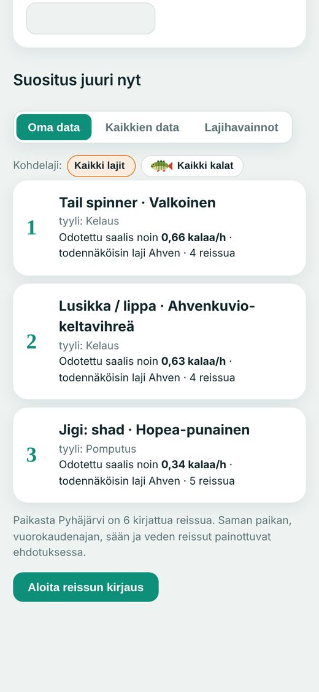
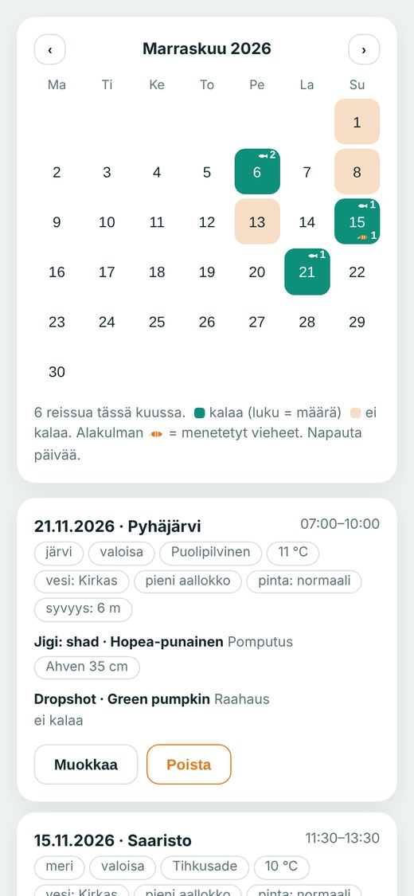
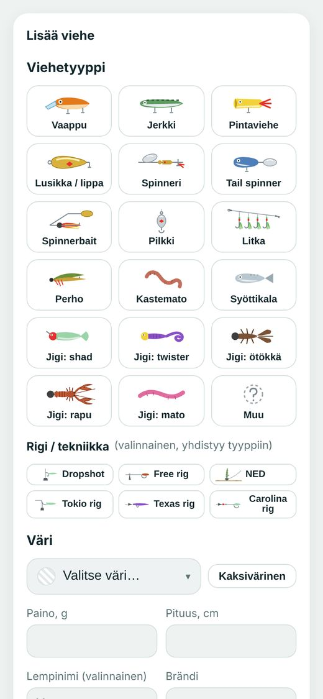
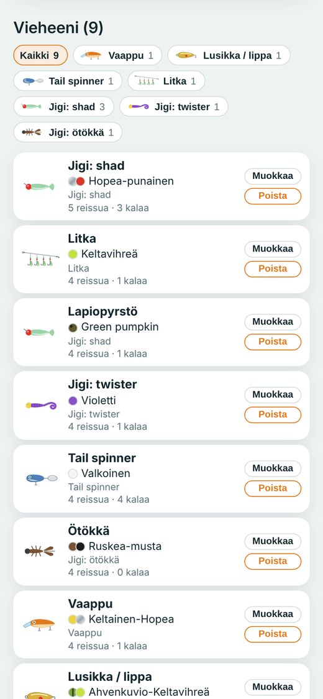
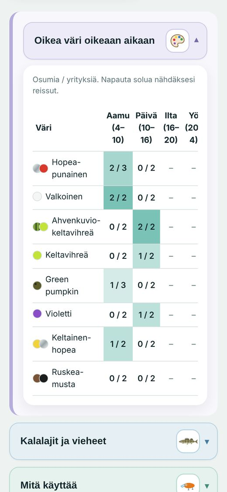
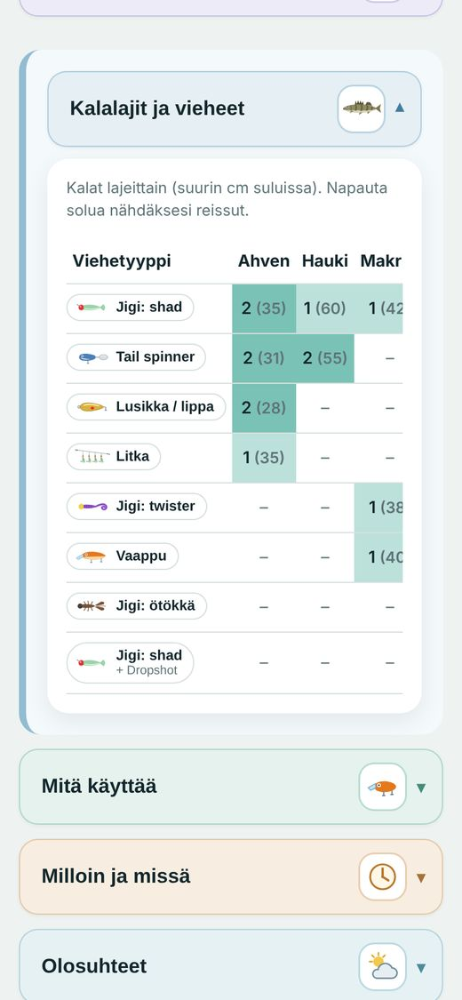
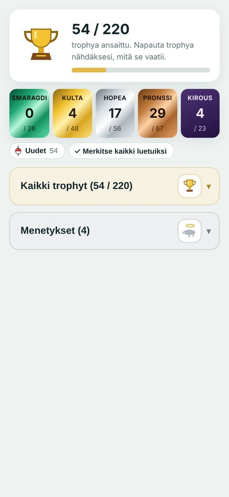

01
Suositukset vesistön mukaan
Saat suosituksia muun muassa viehevalinnoista, väreistä ja olosuhteista, jotta kalaonni olisi mahdollisimman suuri valitsemassasi vesistössä.
Viehe ja väriUintityyliKalaa / tunti
KalaKomppis kokoaa reissusi, saaliisi ja vieheesi yhteen ja kertoo, mikä toimii juuri sinun vesilläsi. Matkan varrella ansaitset trophyja – ja silloin tällöin kirouksen.


Jokainen reissu opettaa jotain. KalaKomppis muistaa sen puolestasi ja muuttaa kokemukset suosituksiksi.
Saat suosituksia muun muassa viehevalinnoista, väreistä ja olosuhteista, jotta kalaonni olisi mahdollisimman suuri valitsemassasi vesistössä.
Pidä kirjaa kalastusreissuistasi ja saaliistasi: paikka, aika, sää, vesi, kalat, mitat ja kuvat.

Rakenna oma virtuaalinen kalapakki ja seuraa, miten vieheet tuottavat tulosta – tai eivät.

Opi tuntemaan eri kalalajit. Kalakoulu esittelee 27 Pohjolan lajia: tuntomerkit, koon ja iän, ravinnon sekä sen, miten kala elää eri vuodenaikoina.
Jokainen reissu on mahdollisuus. Suorita haasteita ja ansaitse tyylikkäitä trophyja suurista kaloista, syvyysennätyksistä, myrskyssä kalastamisesta, uusista lajeista ja kalapaikoista. Jotkut syntyvät sitkeydestä, toiset yhdestä onnekkaasta heitosta. Osa muistuttaa myös epäonnesta.
200+ trophya odottaa saajaansa
KalaKomppis toimii selaimessa ja asentuu aloitusnäytölle kuin mikä tahansa sovellus. Asennettuna se aukeaa ilman selaimen palkkeja ja toimii myös rannalla ilman kenttää.
Esittely liukuu itsestään. Pyyhkäise tai vedä kuvia kumpaan suuntaan tahansa.
Reissut, kalat, kalaa tunnissa ja saaliit lajeittain yhdellä silmäyksellä.
Viehe, väri, uintityyli ja odotettu saalis paikan, sään ja ajan mukaan.
Kalenteri näyttää kalapäivät ja pohjaan jääneet vieheet.
18 viehetyyppiä ja yleisimmät rigit valmiina kuvina.

Jokaiselle vieheelle reissut ja saaliit.

Mikä väri tuottaa kalaa aamulla, päivällä, illalla ja yöllä.

Mikä viehetyyppi tuo mitäkin lajia ja kuinka suurta.

220 trophya viidellä tasolla Smaragdista Kiroukseen.